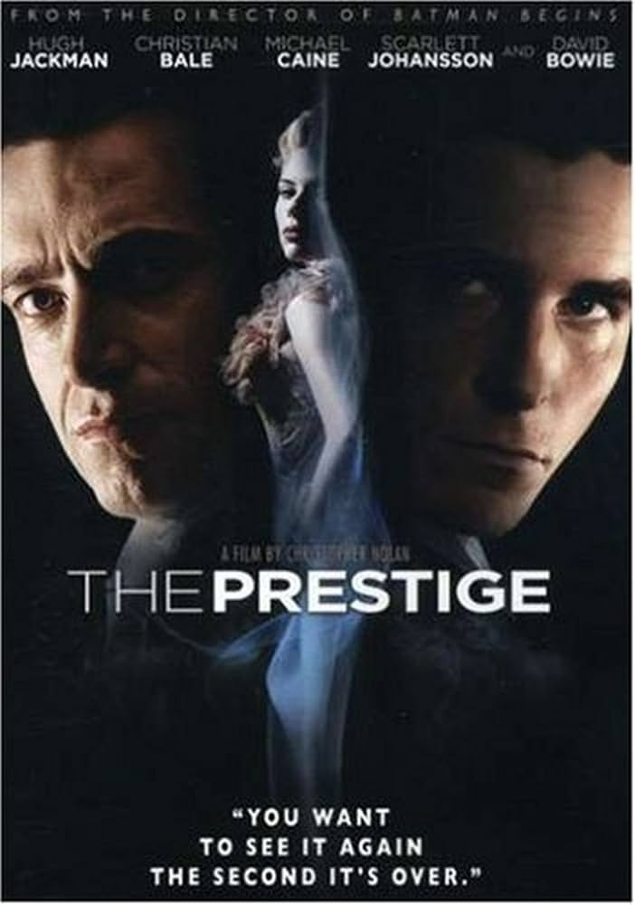

THE PRESTIGE
2006 · ESTADOS UNIDOS / REINO UNIDO · 130 MIN
SINOPSIS
En el Londres de finales del siglo XIX, dos magos rivales compiten por crear el truco de magia más impresionante. Lo que comienza como una disputa profesional se convierte en una obsesión que los lleva a sacrificarlo todo por superar al otro.
REPARTO PRINCIPAL
Hugh Jackman, Christian Bale, Michael Caine, Scarlett Johansson, Rebecca Hall, Andy Serkis y David Bowie.
GÉNEROS
Drama, Misterio, Suspenso.
BANDA SONORA
David Julyan.
ESCUCHAR BANDA SONORAVOLVER A PELÍCULAS